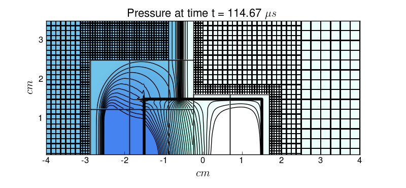

< < < Index > > >

Image source: /media/mauricio/Mr140/School/clawpack-5.0.0/myapps/3D_AxisSym_Euler_Diff_EOS_AMR_mapped_paper/cartesian/_plots/frame0086fig4.png
Other frames: 34 70 78 86 110 143 All Frames